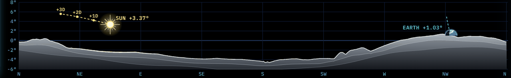
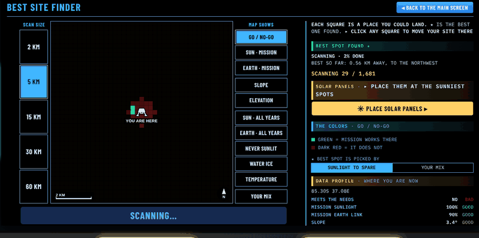
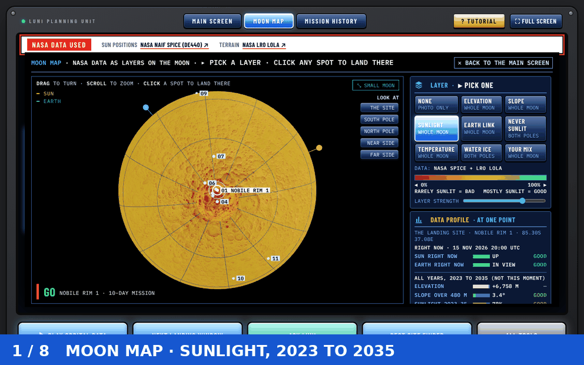

At the Moon’s south pole the Sun only skims the horizon. One hill, or one day of delay, can take away a lander’s power or its link to Earth.
The challenge asked for a tool that lets mission planners, educators and the public compare landing sites and dates quickly. Today that takes several specialist tools. LUNI puts it on one screen.

LUNI’s view from Nobile Rim 1: the Sun and the Earth over 25 days, from 15 Nov 2026
ONE ANSWER
GO or NO-GO for the place, the time and the mission needs you set, with the reason. On a NO-GO, the fixes are buttons in the same strip.

TWO WAYS OUT
When the plan slips, keep the date and move the site with the Best Site Finder, or keep the site and jump to the next landing window.

AND MORE
Moon map layers, six real landings replayed, a 3D view from the surface, an energy budget, ASK LUNI by typing or voice, and a guided tutorial.
THE NASA DATA BEHIND IT
NASA data
What LUNI uses it for
NAIF SPICE (DE440)
Where the Sun and the Earth are, 2023 to 2035
LRO LOLA elevation
Skylines, slopes, scans and map layers
LRO Diviner
Temperature, and where water ice could last
NAIF station kernels
Which Deep Space Network sites have the Moon in view
LRO Wide Angle Camera
The picture of the Moon
CHECKED AGAINST NASA
0.0007°Largest gap from NASA JPL Horizons, over 1,110 Sun and Earth positions at 6 sites.
347 hDaylight LUNI finds for Blue Ghost Mission 1 after landing. Firefly reported 346 h.
0.99Match of LUNI’s polar sunlight maps with NASA’s LOLA maps, at both poles.
99.1%Same “never sunlit” answer as NASA’s south pole map. North pole: 98.9%.
The data is NASA’s, and it is checked. GO or NO-GO is LUNI’s own rule, applied to the mission needs the planner sets, so it is a planning and teaching tool, not flight software. The PROOF button in the app shows every check.
TESTED WITH PEOPLE
LUNI has a built-in user test: six tasks, a timer and a report. Five rounds inside the team took the score from 2 of 6 to 6 of 6, and the screen was changed after every round. On 15 November four people who had never seen it tried it: three friends and one parent, none of them on the team. Three of the four scored 6 of 6, in 8 to 13 minutes. Their reports were turned into changes the same evening: ASK LUNI now answers “what do I do next”, the Best Site Finder says what its colors mean, and the test points to its own task bar. Take the test yourself.
Local judging result
BEST USE OF DATA
Team Mystic Research presented LUNI at its local NASA Space Apps Challenge event on Sunday 15 November 2026, and LUNI won the award for Best Use of Data.
AwardBest Use of Data
TeamMystic Research
ChallengeLunar Landing Site Navigator
Format3 minutes to present, 5 minutes of questions
NextSubmitted for global judging
For teachers and students
THE CLASSROOM LESSON
A ready-to-run 45-minute lesson. Students plan their own Moon landing with the same tool, and must end on a GO.
TRIED IT, OR JUST READ IT? TELL US.
The lesson has not been run in a classroom yet. Two minutes of your feedback will shape the next version.
Printing this page prints only the lesson.
{{LESSON_TITLE}}
{{LESSON}}
How it was built
TWO DRAFTS, {{N_RELEASES}} MAIN RELEASES, ONE WEEKEND
Every picture is the real app at that version. Step through to see what testers’ feedback changed.
Times are New York time. The finder picture exists only for some versions.
THE WEEKEND, IN ORDER
{{TIMELINE}}
Lesson feedback
HOW DID THE LESSON LOOK TO YOU?
Teachers, students and anyone who read it: tell us what would work in a real class and what would not. It is a short form and it goes straight to the team.